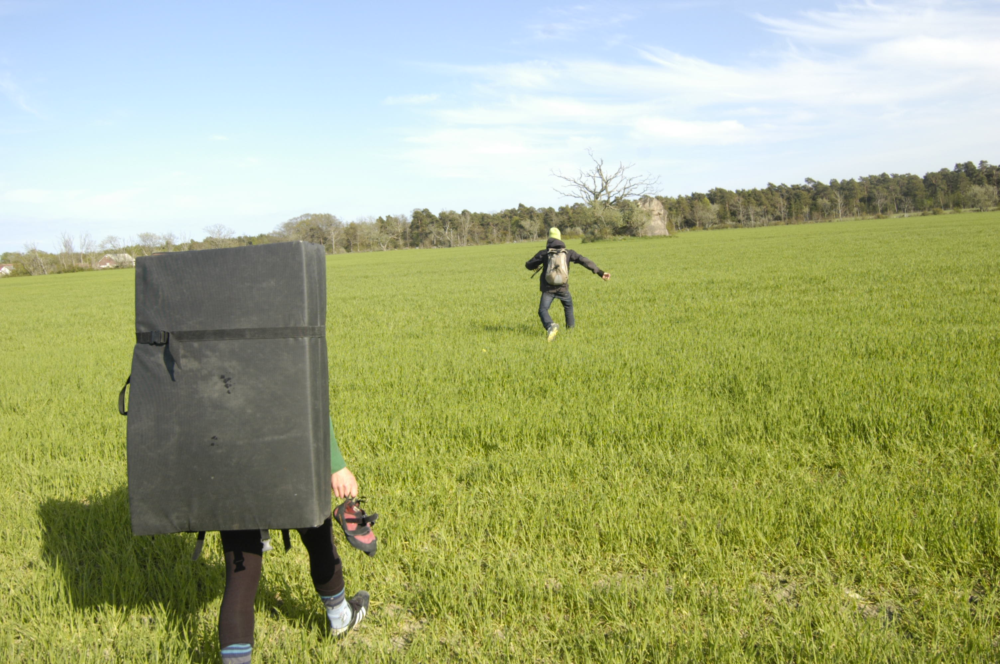

Lat: 57.20938 Long: 18.472715
Gotlands största flyttblock bestående av finsk Rapakivigranit. Då bastun som ska ha legat bredvid stenen inte längre finns kvar kan man istället för att basta roa sig med att klättra på stenen. Här kan man ha kul några timmar, men klockrena linjer saknas. Stenen ligger mitt på en åker, så det är möjligt att det inte går att ta sig fram till stenen beroende på hur åkern brukas.
Bastustainen ligger vid Hägdarve, sväng mot Burs vid Rone kyrka, efter ca. 1,5 km. sväng höger mot Gerete, efter ca. 1 km på den precis innan första huset på höger sida går en liten väg/stig in till stenen.
Category:Bouldering
Category:Gotland